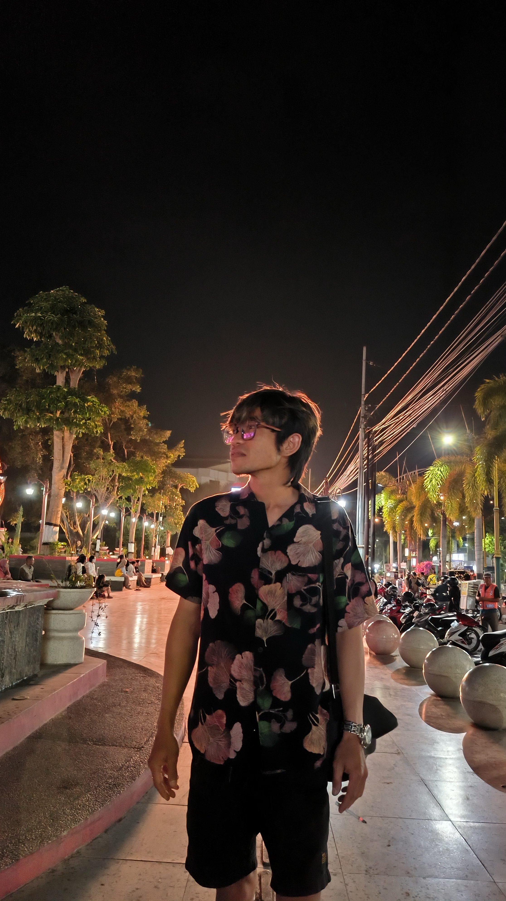

Aku hanyalah manusia yang berjalan menuju senja yang akan lenyap, terbiaskan oleh auroranya.
Aku tidak peduli dengan apa yang orang katakan; perhatianku hanya terfokus pada pembelajaran dalam menjalankan niat baikku.
Aku tidak pernah khawatir tentang segala sesuatu di esok hari.
Meskipun aku mungkin ditipu, dikhianati, atau dicaci-maki, itu bukan masalah.
Karena jika ada halangan atau rintangan di depanku, berarti aku harus terus memperbaiki diriku.
Tidak ada yang benar-benar salah di luar sana; benar dan salah ada dalam diriku sendiri, dengan keterbatasan kesadaranku.
Dunia ini adalah indah seperti yang dijanjikan; keburukan hanya ada dalam diriku sendiri.
Kesempatan hidup ini adalah untuk memperbaiki diri, bukan untuk membenahi hal-hal di luar diri.
Semoga Sang Maha Kuasa senantiasa memberikan kemudahan bagi hamba yang seringkali lupa dan kufur seperti aku.
Dalam setiap langkahku, kupegang teguh tekad ini
Melangkah dengan keyakinan, meski dalam kegelapan malam
Setiap rintangan adalah peluang untuk kuat dan bijak
Kuasa di dalam diriku, seakan tak memiliki batas
Ketika aku melihat ke dalam, di dalam hatiku yang dalam
Aku temukan kekuatan, cahaya yang tak pernah padam
Ketidaksempurnian adalah bagian dari perjalanan ini
Mengajariku tentang hidup, cinta, dan pengampunan
Dalam kesendirianku, aku menemukan kebenaran
Dan dalam kebaikan hatiku, aku menemukan kedamaian
Alelopati bukan musuhku, melainkan guru yang bijak
Membimbingku dalam perjalanan ini, menuju sinar terang
Setiap hari adalah peluang untuk menjadi yang lebih baik
Dalam cinta dan kasih, aku menemukan kebahagiaan sejati
Semoga langit senantiasa melindungi dan memberkati
Perjalanan ini, di bawah cahaya Sang Pencipta yang maha bijaksana.
"Ketika kita fokus pada pembelajaran, bukan perasaan negatif, Mengambil hikmah dari kesalahan, dan menjalani niat baik, Maka dalam setiap kegelapan, kita temukan cahaya yang terang, Saat itulah kita benar-benar tumbuh, belajar, dan menjadi kuat."
Ms
